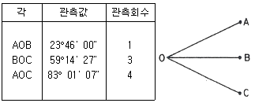

5. 측량학
5.1. 측량학에 대한 전문적인 지식이 요구되는 사항
5.1.1. 측량기기의 종류 및 조정
① 기기 종류 ② 기기별 조정
5.1.2. 거리 및 각측량
① 거리측량 ② 각측량
-
방위각 계산
- xy좌표계에서 x축이 세로축
- x축+ 를 기준으로 시계방향으로 각 측정
-
표고 최확값
- 경중률은 거리에 반비례
-
각측량 최확값
- 
- 측각 오차 구하기 : 83’01’07’-23’46’00’-59’14’27=0’0’40’
- 보정량은 경중률에 반비례 >> AOC 보정량은 1/1:1/3:1/4=12:4:3
- 각 AOC의 최확값은 83’01’07’-0’0’40x3/(12+4+3)
5.1.3. 삼변 및 삼각측량
① 특징 및 정확도 ② 작업순서, 관측 ③ 조정계산 ④ 결과정리
-
삼각망의 종류 ★
- 단열삼각망
- 도로, 하천 및 터널과 같이 폭이 좁고 길이가 긴 지역에 적합
- 거리에 비해 관측수가 적으므로 측량이 신속하고 비용이 적게 들음
- 조건식이 적어 정확도가 낮음
- 유심다각망
- 포괄면적이 가장 넓으므로 농지측량과 같은 방대한 지역 측량에 적합
- 정확도는 단열삼각망보다 높으나 사변형망보다는 낮음
- 사변형망
- 주로 시가지의 수평기준점 측량에 사용
- 시간과 경비가 많이 소요
- 조건식이 많아 가장 정밀
- 단열삼각망
-
삼각망 구성 시 내각을 크게 하는 이유
- sin법칙으로 타변을 구할 때 오차가 적게 발생
5.1.4. 다각측량
① 특징 및 정확도 ② 작업순서, 관측 ③ 조정계산 ④ 좌표전개
-
트래버스망 선점 시 유의사항
- 측량표가 안전하게 보존될 수 있는 곳
- 측점은 앞으로의 세부측량에 편리한 곳
- 측점은 관측할 때 지장이 없는 곳
-
폐합오차와 폐합비
- 폐합오차 :
- 위거오차 : El
- 경거오차 : Ed
- 폐합비 :
- 폐합오차 :
5.1.5. 수준측량
① 정의, 분류, 용어 ② 야장기입법 ③ 수준망 조정 ④ 교호수준측량
-
수준측량 용어
- 전시 : 표고를 구하려는 점에 세운 표척의 눈금을 읽은 값
- 후시
- 이기점 : 기계를 옮기기 위하여 어떠한 점에서 전시와 후시를 모두 취하는 점
- 중간점 : 어떤 지점의 표고를 알기 위하여 표척을 세워 전시만을 취하는 점
-
직접 수준측량에 있어 전시 후시 시준거리를 같게 하는 이유
- 빛의 굴절오차 소거
- 지구 곡률오차 소거
- 시준선이 기포관축과 평행하지 않는 경우의 오차가 소거
5.1.6. 지형측량
① 지형도 작성 ② 오차 및 정확도
- 토털스테이션을 이용한 등고선 측정
- 측점으로부터의 기계고를 측정
- 토털스테이션은 추적모드(tracking mode)로 설정하고 측정할 등고선의 높이를 입력
- 높이를 알고 있는 측점에 토털스테이션을 설치하거나 기준점을 관측하여 측점의 높이를 결정
5.1.7. 측량오차론
① 오차의 종류 ② 조정계산 방법
-
위치오차
-
면적오차
5.2. 공간정보의 구축 및 관리 등에 관한 법령
5.2.1. 총칙
① 목적 ② 정의
5.2.2. 측량통칙
① 측량의 계획 ② 측량의 기준
- 통합기준점
- 개별적(삼각점, 수준점, 중력점 등)으로 설치·관리되어온 국가기준점 기능을 통합하여 편의성 등 측량능률을 극대화하기 위해 구축한 새로운 기준점
- GNSS측량(평면), 직접수준측량(수직), 상대중력측량(중력) 성과를 제공하기 위해 2007년 시범사업을 통해 통합기준점 설치를 시작
5.2.3. 기본측량
① 실시 ② 측량성과
제14조(기본측량성과 검증기관의 지정) ① 법 제13조제2항에서 “대통령령으로 정하는 측량 관련 전문기관”이란 다음 각 호의 기관 중 별표 4의 기준을 갖춘 기관으로서 측량 관련 인력과 장비 보유 현황 등을 종합적으로 검토하여 국토교통부장관이 지정하는 기관(이하 “기본측량성과 검증기관”이라 한다)을 말한다. <개정 2013.3.23, 2020.6.9>
- GPS수신기(1급): 3대 이상 2. 토털 스테이션(1급): 1대 이상 3. 레벨(1급, 인바표척 포함): 1대 이상 4. 도화기: 1대 이상 5. 출력장치: 1대 이상 6. 자동독취기(스캐너): 1대 이상 7. 수치지도 입력ㆍ출력 및 GPS데이터 처리 소프트웨 어: 1식
- 특급기술인: 2명 이상 2. 고급기술인: 3명 이상 3. 중급기술인: 3명 이상 4. 초급기술인: 1명 이상 5. 정보처리기사 자격취득자: 1명 이상 6. 고급기능사 가. 도화기능사: 2명 이상 나. 지도제작기능사: 3명 이상
제16조(기본측량성과의 국외 반출 금지) ① 누구든지 국토교통부장관의 허가 없이 기본측량성과 중 지도등 또는 측량용 사진을 국외로 반출하여서는 아니 된다. 다만, 외국 정부와 기본측량성과를 서로 교환하는 등 대통령령으로 정하는 경우에는 그러하지 아니하다. <개정 2013. 3. 23.>
- 대한민국 정부와 외국 정부 간에 체결된 협정 또는 합의에 따라 기본측량성과를 상호 교환하는 경우
- 정부를 대표하여 외국 정부와 교섭하거나 국제회의 또는 국제기구에 참석하는 자가 자료로 사용하기 위하여 지도나 그 밖에 필요한 간행물(이하 “지도등”이라 한다) 또는 측량용 사진을 반출하는 경우
- 관광객 유치와 관광시설 홍보를 목적으로 지도등 또는 측량용사진을 제작하여 반출하는 경우
- 축척 5만분의 1 미만인 소축척의 지도(수치지형도는 제외한다. 이하 이 조에서 같다)나 그 밖에 필요한 간행물을 국외로 반출하는 경우
- 축척 2만5천분의 1 또는 5만분의 1 지도로서 「국가공간정보 기본법 시행령」 제24조제3항에 따른 보안성 검토를 거친 지도의 경우(등고선, 발전소, 가스관 등 국토교통부장관이 정하여 고시하는 시설 등이 표시되지 않은 경우로 한정한다.
- 축척 2만5천분의 1인 영문판 수치지형도로서 「국가공간정보 기본법 시행령」 제24조제3항에 따른 보안성 검토를 거친 지형도의 경우
5.2.4. 공공측량 및 일반측량
① 실시 ② 측량성과 ③ 측량성과의 심사
제2조(정의) 이 법에서 사용하는 용어의 뜻은 다음과 같다.
8. “측량성과”란 측량을 통하여 얻은 최종 결과를 말한다.
5.2.5. 측량업 및 기술자
① 측량업 등록 ② 측량기술자
제41조(측량기술자의 의무) ① 측량기술자는 신의와 성실로써 공정하게 측량을 하여야 하며, 정당한 사유 없이 측량을 거부하여서는 아니 된다.
② 측량기술자는 정당한 사유 없이 그 업무상 알게 된 비밀을 누설하여서는 아니 된다.
③ 측량기술자는 둘 이상의 측량업자에게 소속될 수 없다.
④ 측량기술자는 다른 사람에게 측량기술경력증을 빌려 주거나 자기의 성명을 사용하여 측량업무를 수행하게 하여서는 아니 된다.
5.2.6. 지명, 성능검사, 벌칙
① 지명 ② 성능검사 ③ 벌칙
제111조(과태료)
① 제13조제4항을 위반하여 고시된 측량성과에 어긋나는 측량성과를 사용한 자에게는 300만원 이하의 과태료를 부과한다.
② 다음 각 호의 어느 하나에 해당하는 자에게는 200만원 이하의 과태료를 부과한다.
- 정당한 사유 없이 측량을 방해한 자
- 2. 제92조제1항을 위반하여 측량기기에 대한 성능검사를 받지 아니하거나 부정한 방법으로 성능검사를 받은 자
- 정당한 사유 없이 제99조제1항에 따른 보고를 하지 아니하거나 거짓으로 보고를 한 자
- 정당한 사유 없이 제99조제1항에 따른 조사를 거부ㆍ방해 또는 기피한 자
- 정당한 사유 없이 제101조제7항을 위반하여 토지등에의 출입 등을 방해하거나 거부한 자